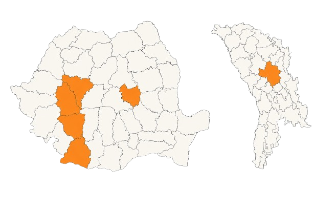

Perle Ascunse
Sprijin educațional pentru copiii din comunități vulnerabile
”Dincolo de lipsuri și dificultăți, credem că fiecare copil poartă în el un potențial care poate fi descoperit, format și încurajat.”
Început în anul 2021, proiectul „Perle Ascunse” continuă să reprezinte una dintre direcțiile fundamentale de intervenție ale Asociației Forța Vieții în domeniul educației, mentorării și formării copiilor proveniți din comunități vulnerabile.
Prin acest proiect, asociația urmărește nu doar sprijinirea copiilor aflați în dificultate, ci dezvoltarea unui model educațional stabil și sustenabil, capabil să formeze generații care, la rândul lor, vor deveni sprijin pentru comunitățile din care provin.
Proiectul este dezvoltat permanent prin activități educaționale, muzicale, practice, sociale și de mentorare, desfășurate în comunități vulnerabile din România și Republica Moldova, prin implicarea voluntarilor, a profesioniștilor din diferite domenii și a partenerilor locali.
Cui se adresează
- elevilor aflați în pragul evaluărilor și examenelor
- copiilor cu dificultăți educaționale sau sociale
- copiilor proveniți din familii cu resurse limitate
- tinerilor care au nevoie de mentorat și sprijin emoțional
Ce ne propunem
- prevenirea abandonului școlar
- creșterea șanselor de promovare la examene
- sprijinirea copiilor proveniți din familii vulnerabile
- dezvoltarea încrederii în sine și a responsabilității personale
- formarea unui model educațional sustenabil
Impact
- creșterea motivației pentru învățare
- îmbunătățirea rezultatelor școlare
- prevenirea abandonului educațional
- dezvoltarea abilităților sociale și practice
- formarea caracterului și a responsabilității personale
Activitățile proiectului
Educație și pregătire școlară
Au fost organizate sesiuni regulate de pregătire la discipline esențiale precum limba română și matematica, cu implicarea profesorilor și voluntarilor asociației.
Muzică și dezvoltare personală
Muzica a reprezentat unul dintre cele mai importante instrumente educaționale folosite de asociație.
Tabere și activități educaționale
Copiii au participat la lecții, activități practice, ateliere de dezvoltare personală și sesiuni de mentorat.
Mentorare și sprijin emoțional
Voluntarii și mentorii implicați au oferit încurajare constantă și sprijin emoțional.
Formare practică și responsabilitate
Copiii și adolescenții au fost implicați în activități practice care au contribuit la dezvoltarea responsabilității și a spiritului de echipă.
Implicare comunitară
Copiii implicați în proiect au participat la vizite și activități desfășurate în comunități vulnerabile.
Zone de intervenție și prezență teritorială
În perioada 2021–2026, proiectul „Perle Ascunse” s-a desfășurat în mai multe comunități vulnerabile din România și Republica Moldova, prin intermediul punctelor operaționale și al sediilor secundare ale Asociației Forța Vieții.
Activitățile educaționale au fost dezvoltate în special în zone rurale și comunități cu acces limitat la resurse educaționale, în județele Hunedoara, Gorj, Dolj, Alba, Covasna și în Republica Moldova.
Pentru desfășurarea constantă a activităților, asociația utilizează spații puse la dispoziție prin parteneriate, contracte de comodat și sedii secundare înregistrate fiscal.

Viziunea noastră
Credem că educația adevărată nu înseamnă doar transmitere de informații, ci formarea omului în întregime: minte, caracter, relații și responsabilitate față de comunitate.
Prin credință, mentorat, educație și implicare practică, ne dorim să construim generații care nu doar ies din dificultate, ci devin la rândul lor lumină și sprijin pentru alții.